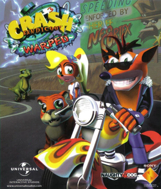
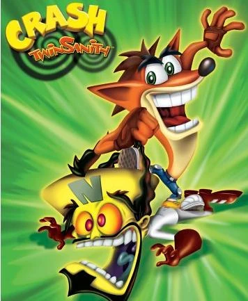

Crash Bandicoot
“Whoa!” - Crash Bandicoot 1996
Is the main protagonist of the Crash Bandicoot series. Originally planned to be named Willie the Wombat, he is an Eastern Barred Bandicoot living life on N. Sanity Island, who was captured and evolved by Doctor Neo Cortex. Throughout the series, Cortex is Crash's usual arch-enemy and is always defeated by Crash in order to keep peace around the island. Crash is often accompanied by his ally, Aku Aku, the secondary protagonist. In the earlier games, he tended to say "Whoa!" whenever he got killed. In the later games, he spoke gibberish with a very basic knowledge of the language spoken in the game.

Crash Bandicoot 3 - PS2 Game

Crash TwinSanity - PS2 Game
List of Games
Crash Bandicoot -1996 - PlayStation
-
Crash Bandicoot 2: Cortex Strikes Back - 1997 - PlayStation
-
Crash Bandicoot 3: Warped - 1998 - PlayStation
-
Crash Team Racing - 1999 - PlayStation
-
Crash Bash - 2000 - PlayStatio
-
Crash Bandicoot: The Wrath of Cortex - 2001 - PlayStation 2
-
Crash Nitro Kart - 2003 - PlayStation 2
-
Crash Twinsanity - 2004 - PlayStation 2
If you enjoyed some Mario Kart in your gaming experience, I would totally recomend playing Nitro Kart.
Or a party game, go for Crash Bash with a chaotic gameplay with a lot of backstabs!